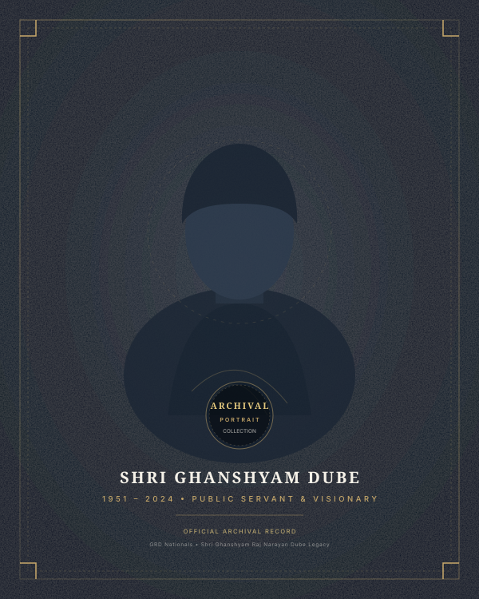

The Legacy of Shri Ghanshyam Dube
1938 – 2021 • A Lifetime of Physical Discipline, Civic Fortitude & Silent Humanity
The Man
Born in 1938, Shri Ghanshyam Dube's character was shaped in the rigorous discipline of traditional Indian soil wrestling (Kushti). The akhada in Maharashtra was not simply an arena of athletic contest; it was a sacred school of spiritual grounding, self-restraint, and unconditional egalitarian brotherhood.
To his family and disciples, he was a pillar of quiet strength—never demanding privileges, waking before dawn, and maintaining the disciplined habits of an ascetic wrestler throughout his eight decades of life.
«The true wrestler does not fight to conquer others; he fights to master his own ego.»

The Leader
Public Life • Maharashtra • Civic Statesmanship
In the socio-political arena of Maharashtra and Mumbai, Ghanshyamji brought the moral purity of the akhada directly into public service. In an era when leadership frequently succumbed to self-aggrandizement, he remained incorruptible, approachable, and fiercely dedicated to common citizens.
His home was an open sanctuary for laborers, farmers, aspiring athletes, and distressed families. He resolved complex community disputes with quiet wisdom, securing schools, potable water lines, and community healthcare clinics without ever placing his name on a plaque.
Leadership Without Posturing
«He measured authority not by the entourage that followed him, but by how securely the weakest person in the crowd could speak to him without fear.»
The Journey
Chronological milestones of courage, public dedication, and enduring national service.
The Values
The four moral pillars that guide the annual selection of GRD-10 Achievers.
Courage
Standing unwaveringly in defense of public justice, even against overwhelming opposition.
Service
Placing the well-being of the collective before personal comfort, fortune, or title.
Integrity
Total alignment of moral compass across private convictions and public stewardship.
Perseverance
The relentless stamina to carry noble work forward through decades of silence.
Carrying The Flame Forward
Shri Ghanshyam Dube’s physical journey came to an end in 2021, but his creed lives on through every unsung educator, healthcare worker, grassroot athlete, and social reformer recognized under the GRD-10 platform.